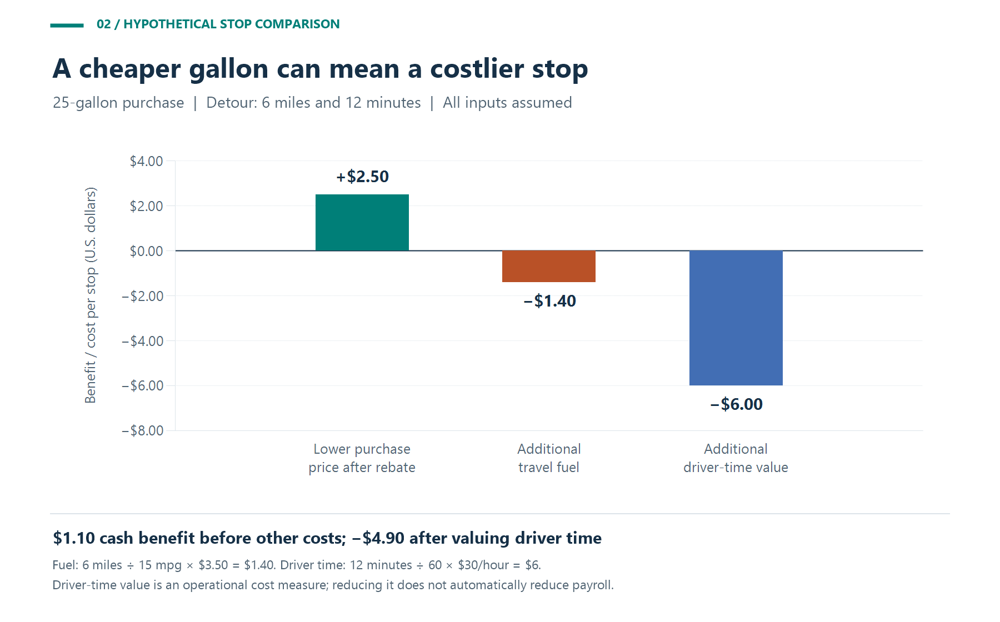
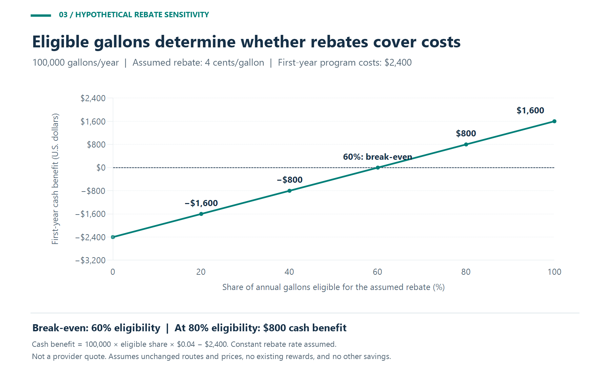

Fleet fuel cards are most useful when drivers can buy the right fuel along their working routes at a competitive total cost. Station coverage determines which purchases are practical. Fuel pricing, rebate eligibility, and program costs determine whether those purchases save money.
For a fleet manager, the goal is to connect the two: give drivers usable fueling options, then measure the cost of choosing among them. A discount that requires an expensive detour can disappoint. A convenient station with no rebate can still be the economical choice.
Gas station coverage and rebate eligibility answer different questions
Business Fleet Solutions advertises Shell Card Business Flex with acceptance at 95% of U.S. gas stations and ongoing rebates of up to five cents per gallon exclusively at Shell stations. Its product page also describes automated fuel accounting, invoice access, downloadable reports, and transaction details covering drivers, locations, taxes, and fuel types. These are provider-described capabilities and advertised terms; the coverage percentage is not a guarantee for an individual route, and the maximum rebate is not an average saving.¹
Evaluate a proposed fuel card using three separate checks:
| Check | What to establish | Why it matters to the decision |
|---|---|---|
| Card acceptance | Confirm that the specific station and payment point accept the card | A useful location must support the intended purchase |
| Rebate eligibility | Identify qualifying locations, products, volume tiers, and account terms | Accepted purchases and discounted purchases need separate forecasts |
| Operational fit | Verify fuel type, opening hours, vehicle access, and distance from the route | A station must work for the vehicle and its assignment |
Ask for a current station list and test the locations your drivers actually use. For diesel trucks, check the required diesel product and suitable pump access. For vans, pickups, and passenger vehicles, check the required gasoline grade and whether the site fits the normal workday. Confirm physical access for trailers or larger vehicles separately from payment acceptance.
Why fuel costs deserve close management attention
The American Transportation Research Institute's July 2026 release reports that operating a truck cost an average of $2.336 per mile in 2025, or $1.854 excluding fuel. Subtracting those published figures gives a fuel component of $0.482 per mile, approximately 20.6% of the total. That percentage is an author calculation from a trucking benchmark; it is not a measured fuel-card saving or a budget assumption for every vehicle fleet.²
Use your own fleet's fuel volume to size the opportunity. For example, a hypothetical fleet buying 100,000 gallons per year saves $1,000 annually for each one-cent reduction in its average net price per gallon, assuming the same quantity and no offsetting costs.
That makes small differences worth checking, but it also makes small errors expensive. Applying a rebate to gallons that do not qualify, overlooking transaction charges, or comparing different fuel grades can distort the business case. Keep the purchase records detailed enough to reproduce the result.
Station choice matters because fuel prices differ
The U.S. Energy Information Administration identifies taxes, distance from supply, supply disruptions, retail competition, and operating costs as factors behind regional gasoline-price differences. Its 2025 annual averages for regular gasoline ranged from $2.677 per gallon on the Gulf Coast to $4.094 on the West Coast among the five main regions shown below. These historical regional averages provide market context, not current station quotes or a discount available through a fuel card.³
Figure 1. Historical regional averages from the EIA source cited above. These are regular-gasoline market benchmarks, not current station prices or fuel-card savings.
For purchasing decisions, compare suitable stations on the same route using prices for the same fuel grade and payment method, collected close together in time. Include the rebate the fleet expects to earn under its actual account terms.
For performance reviews, compare like-for-like work. A department operating in a more expensive market should not automatically appear less efficient because its fuel dollars per mile are higher. Review purchase price and fuel consumption separately, and account for changes in territory, vehicle type, and assignment.
Measure network coverage against your fleet's routes
A practical coverage review starts with planned fueling needs. Map depots, recurring customer locations, delivery corridors, and anticipated refueling points. Include occasional assignments that are important enough to require a dependable backup.
Define a usable station before counting it. Require confirmed card acceptance, the correct fuel, workable opening hours, suitable vehicle access, and an acceptable detour. Set the acceptable detour for the operation rather than treating the closest map marker as sufficient.
One useful internal measure is:
Usable fueling coverage = planned fueling events with a suitable accepting station ÷ all planned fueling events.
If 90 of 100 planned monthly fueling events have a suitable station within the fleet's chosen limits, the coverage result is 90%. This is a hypothetical, fleet-specific planning measure. It does not estimate a provider's national station coverage.
Weight the review by expected visits or gallons. A location used daily deserves more attention than a location used once a year. Also identify where only one suitable option exists. Test a backup for those areas and document how drivers should handle an unavailable station or a declined transaction.
Coverage can then become a practical decision rule: approve stations that fit the route, compare their total fueling costs, and give drivers enough information to use them without repeated calls to dispatch.
Calculate the total cost of a fueling stop
A station comparison should include the fuel purchase, any extra driving needed to reach it, and the value of additional driver time. Keep cash expenses separate from time valued for operational decisions.
Consider a hypothetical 25-gallon purchase at either of two accepting stations:
| Item | Station on the route | Station requiring a detour |
|---|---|---|
| Pump price | $3.55/gallon | $3.50/gallon |
| Assumed earned rebate | None | $0.05/gallon |
| Net purchase price | $3.55/gallon | $3.45/gallon |
| Cost of the 25-gallon purchase | $88.75 | $86.25 |
| Additional travel | None | 6 miles and 12 minutes |
The more distant station saves $2.50 on the purchase. At an assumed 15 miles per gallon, the six-mile detour consumes 0.4 gallons. Valuing that extra fuel at an assumed $3.50 per gallon adds $1.40, leaving $1.10 in cash benefit before other costs.
The additional 12 minutes, valued at an assumed $30 per hour, represents $6 of driver time. Including that time value changes the result to a $4.90 economic disadvantage per stop. All prices, rebates, distances, vehicle performance, and time inputs are illustrative; this is not a comparison of actual stations or a card quotation.

Figure 2. Hypothetical benefits and costs of choosing the more distant station. Cash benefit is $1.10 before other costs; including driver-time value produces a negative $4.90 result.
Under these assumptions, the maximum extra time justified by the remaining $1.10 benefit is only 2.2 minutes: $1.10 divided by $30 per hour, multiplied by 60. Extra wear, tolls, or waiting would reduce that allowance further.
A shorter stop frees driver capacity. It reduces payroll expense only if paid hours, overtime, or another actual expense falls. Track the two benefits separately. For this comparison, the extra travel fuel is counted once, and the $30 hourly value covers driver time only.
The practical value of broader acceptance is the opportunity to compare more suitable stops. Verify that it creates better choices on the fleet's routes before assigning a dollar saving to coverage itself.
Forecast rebates using eligible gallons and actual costs
Estimate rebates at the billing-cycle level when rates depend on volume. Confirm which purchases determine the volume band, which gallons earn the credit, and whether any caps or other conditions apply. Annual volume alone should not determine the rate used in every month.
For a simple forecast with a constant earned rate:
Gross annual rebate = annual gallons × eligible share × earned rebate per gallon.
Consider a separate hypothetical fleet purchasing 100,000 gallons annually, with 80% eligible for an assumed four-cent rebate. Gross rebates would be $3,200. Assume first-year incremental program costs of $2,400, comprising $1,800 in card fees, $300 in reporting charges, and $300 in setup costs. The modeled first-year cash benefit is $800.
Every charge and the constant four-cent rate are assumptions, not terms quoted for Shell Card Business Flex. The example also assumes unchanged pump prices, routes, and fuel consumption, and no rewards under the current payment method. It assigns no unmeasured benefit to coverage, reporting, or purchase controls.

Figure 3. Hypothetical rebate sensitivity using 100,000 annual gallons, a constant four-cent earned rebate, and $2,400 in first-year costs. Eligibility and rebate assumptions are independent of any provider quotation.
At 40% eligibility, the same assumptions produce $1,600 in rebates and an $800 loss after program costs. At 60% eligibility, the example breaks even:
$2,400 ÷ (100,000 gallons × $0.04) = 60% eligible volume.
The result also depends on the earned rate. At two cents per eligible gallon and 80% eligibility, gross rebates fall to $1,600, again leaving an $800 loss. Test both the qualifying volume and the rate rather than applying the advertised maximum to every gallon.
For the final comparison, deduct any existing rewards the fleet would give up and include applicable financing, transaction, software, or other incremental costs. If station prices or routes change, calculate those effects as well. Avoid counting a rebate twice by adding it to a price comparison that already deducts the same credit.
Use fuel-card reports to check coverage and savings
Ask the provider to demonstrate how its reports answer the fleet's purchasing questions. Request a sample export and reconcile it with invoices and posted credits before relying on a dashboard total.
Build a monthly review around a few defined measures:
| Measure | Suggested calculation or review | Management use |
|---|---|---|
| Usable fueling coverage | Suitable planned fueling events divided by all planned events | Find gaps in the station plan |
| Eligible gallon share | Qualifying gallons divided by total gallons | Check whether the rebate forecast holds |
| Weighted net fuel price | Fuel purchase dollars less earned credits, divided by gallons | Compare actual purchasing results within comparable markets |
| Fueling detours | Additional miles and minutes relative to the planned route | Identify stops whose travel burden outweighs the discount |
| First-year cash benefit | Incremental purchase and expense savings less incremental costs | Decide whether the program pays for itself |
| Unresolved transactions | Unmatched purchases, credits, and exception records | Assign follow-up to accounting or the fleet manager |
These are recommended management measures, not a claim that every platform generates them automatically. Set consistent treatment for refunds, taxes, delayed credits, and off-card purchases. Use a gallons-weighted average when comparing prices; averaging station price signs equally can misrepresent where the fleet actually bought fuel.
For detour analysis, combine purchase records with verified trip information where available. A station address identifies a transaction location; require separate route evidence before drawing conclusions about a driver's movements. Check vehicle and driver assignments before escalating an apparent exception.
Choose coverage that supports economical daily work
Before committing a fleet, test a representative set of routes, drivers, vehicles, and fueling times. Compare the proposed arrangement with the current process over comparable activity. Record acceptance issues, qualifying gallons, final prices, credits, fees, extra travel, and administrative effort.
Set the decision criteria in advance. Require workable station access, a documented process for exceptions, and a positive benefit after relevant costs. Review changes in fuel markets and assignments so a lower total bill is not automatically attributed to the card.
The best fit is a fuel-card program that makes economical stops practical for the fleet's actual work. Coverage creates options; disciplined purchasing and reporting establish whether those options deliver lower costs and useful time savings.
Footnotes
1. Business Fleet Solutions: Shell Card Business Flex For Fleet Fueling at Gas Stations Across the U.S.
https://www.businessfleetsolutions.com/fuel-card/shell-card-business-flex/
2. American Transportation Research Institute: New ATRI Report Details Accelerating Costs and Low Profitability Despite Cuts.
https://www.prnewswire.com/news-releases/new-atri-report-details-accelerating-costs-and-low-profitability-despite-cuts-302826514.html
3. U.S. Energy Information Administration: Gasoline Explained — Regional Gasoline Price Differences.
https://www.eia.gov/energyexplained/gasoline/regional-price-differences.php
Related Links
Fuel Efficiency and Gas MileageAre there any fuel efficient trucks available?
Advantages of Owning a Truck